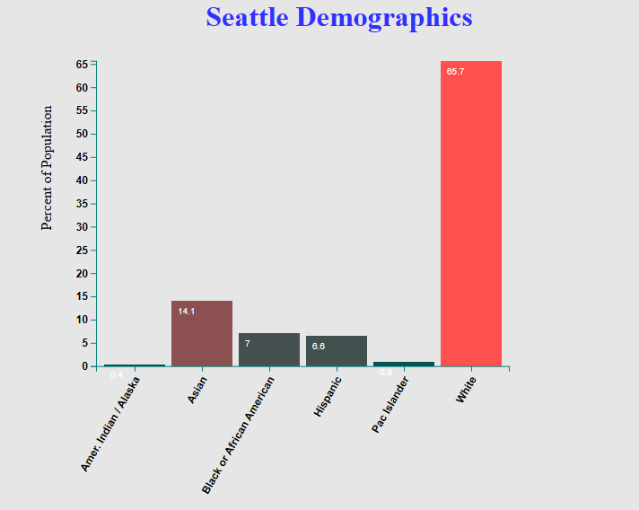

Seattle PD Use of Force Reports
A data visualization illustrating the total use of force reports by the Seattle Police Department.
- Data Analysis and compilation by Sheldon Schatzman and Katon Minhas
- Data Visualization by Theodore Dyer
- All of this data and more is available at data.seattle.gov > Police > information and Data